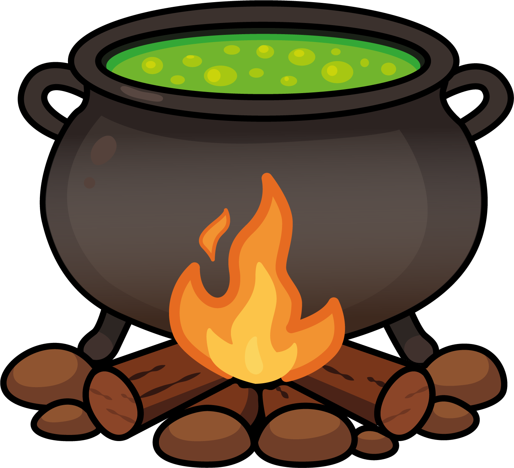
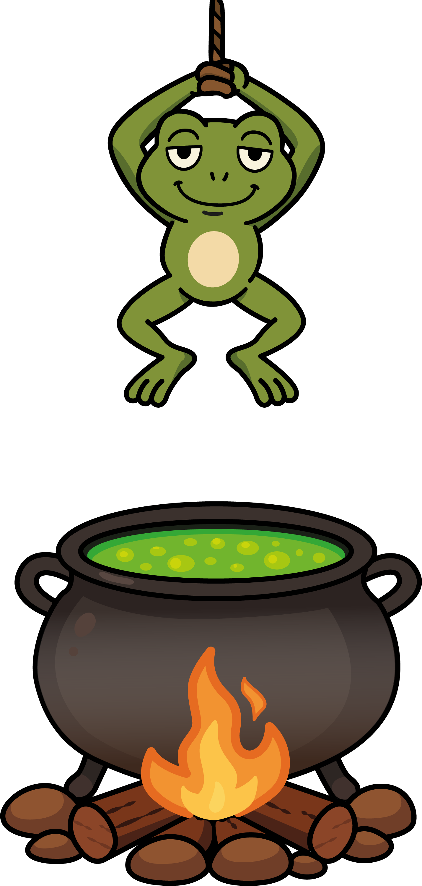
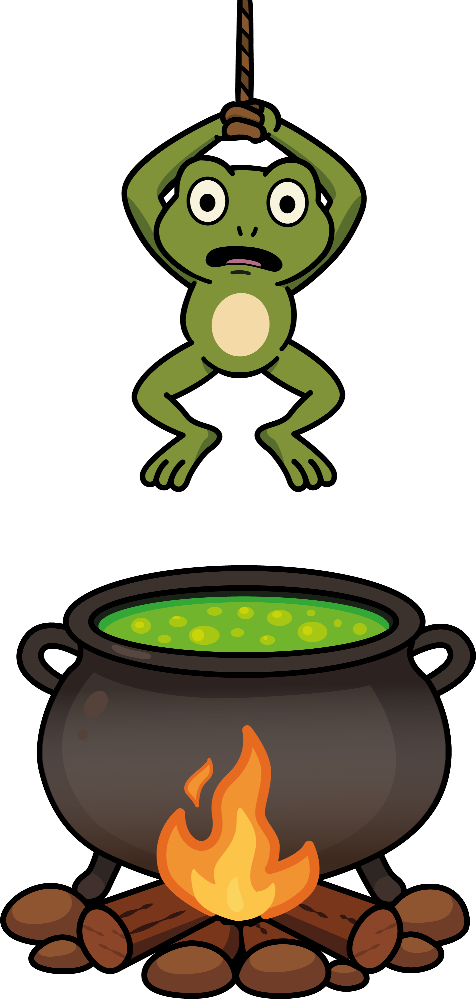
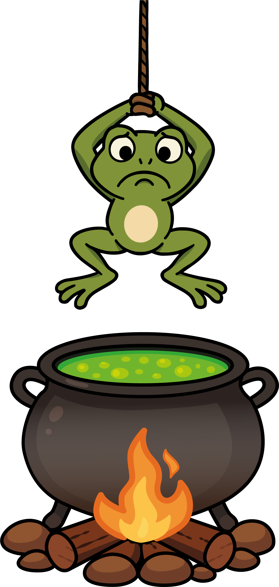
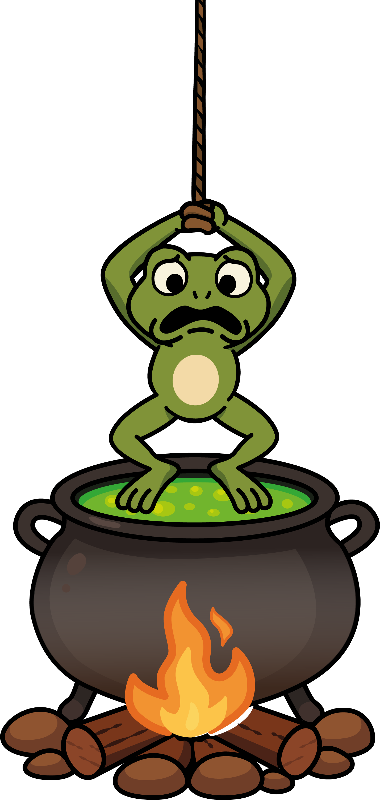
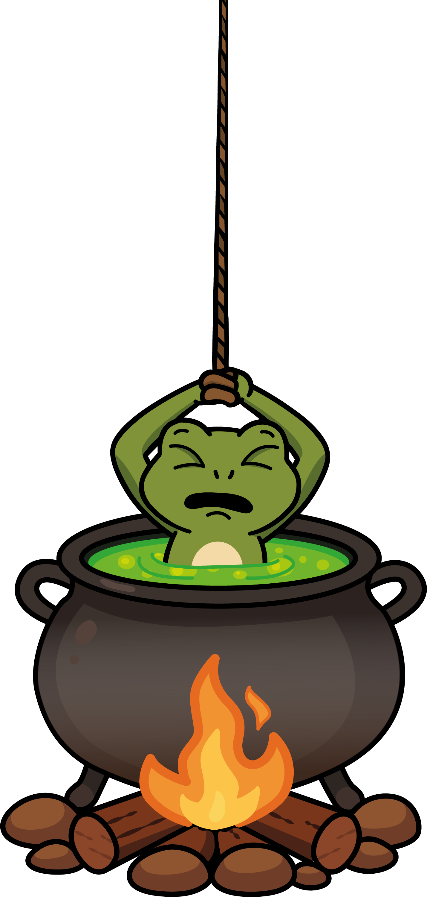
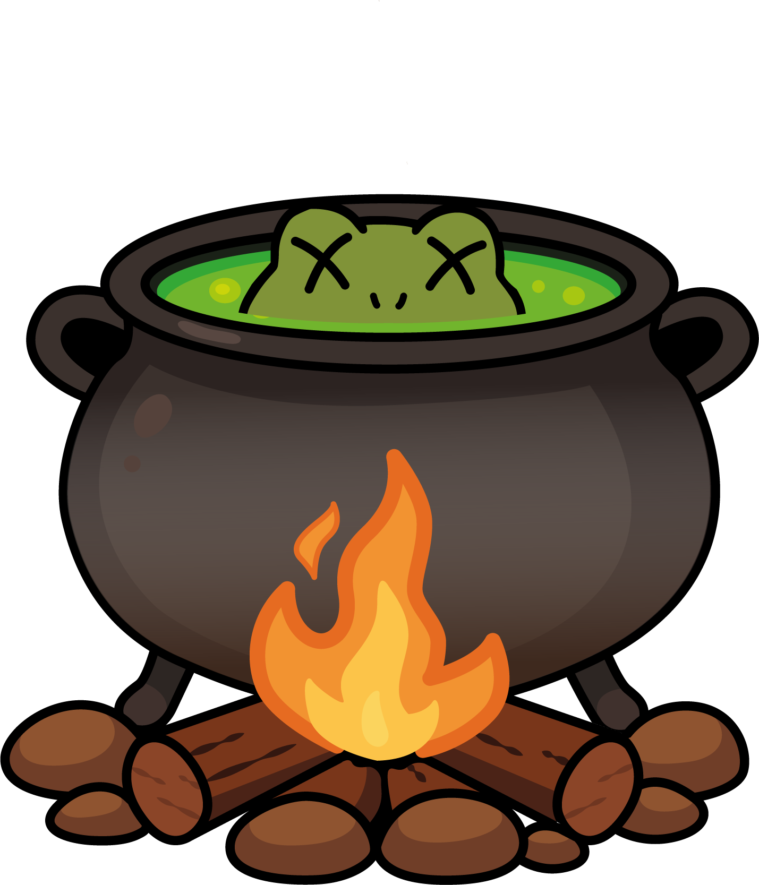

Las Ranas Ahogadas es una versión competitiva inspirada en el ahorcado en la que dos jugadores
luchan por acumular más puntos… o por evitar que su rana se hunda antes de tiempo.
Vidas: Cada jugador dispone de 6 intentos fallidos. Al fallar los seis, su rana se ahoga y el rival gana la partida.
Puntuación: El objetivo no es descubrir la palabra entera, sino acertar letras.
• Cada vocal acertada otorga 5 puntos.
• Cada consonante acertada otorga 10 puntos.
Cómo se gana: La partida termina de dos maneras:
Uno de los jugadores pierde sus 6 vidas → su rana se ahoga y el rival vence.
Se revela la palabra sin que nadie se ahogue → gana quien haya sumado más puntos.
Nota: Si descubres la palabra antes de tiempo, ¡no la pronuncies!
Revelarla daría ventaja a tu adversario, ya que la esencia del juego está en adivinar letras,
no en anunciar la solución.
Las Ranas Ahogadas
Score: 0







Intentos restantes: 6
Score: 0
Intentos restantes: 6
Turno de Jugador 1
Fin del Juego
El juego ha finalizado. Haz clic abajo para volver al inicio.